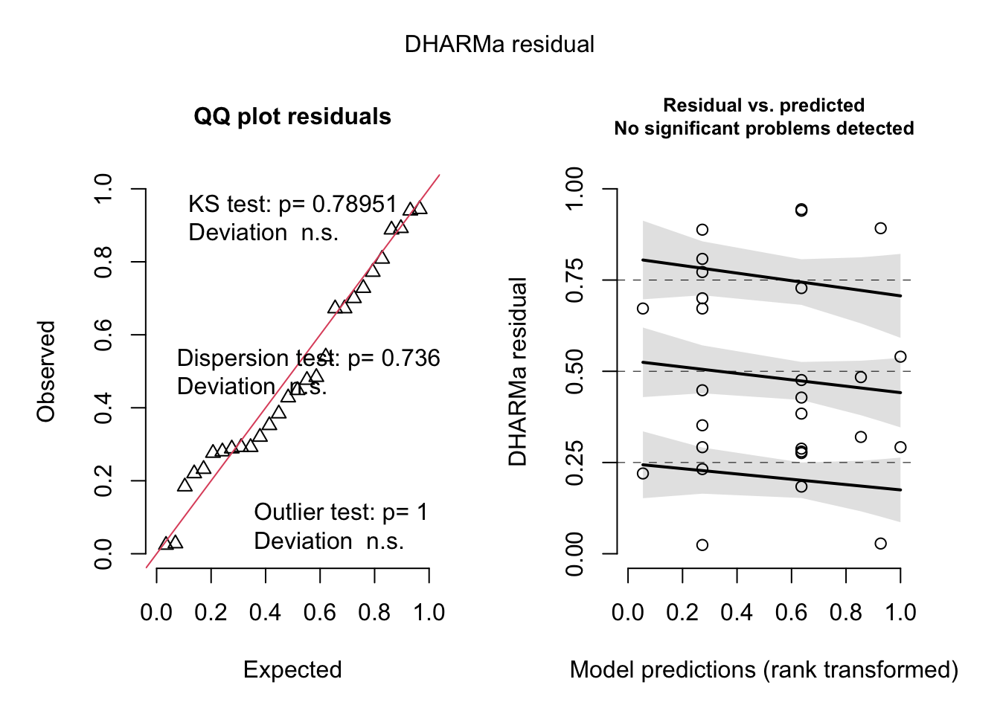

library(tidyverse)
library(magrittr)
library(readxl)
library(janitor)
library(broom.mixed)
library(lmerTest)
library(DHARMa)
library(emmeans)2022-10-17 Alex MS4A qPCR
df = read_csv("iMGL_iso_samples_combined_qPCR_clean.csv") %>% clean_names()Rows: 240 Columns: 14
── Column specification ────────────────────────────────────────────────────────
Delimiter: ","
chr (5): Target Name, Genotype, Experiment, Cell_type, Treatment
dbl (9): avgCT, dCT, Line, mean_dCT, sd_dCT, se, ddCT, FC, log2FC
ℹ Use `spec()` to retrieve the full column specification for this data.
ℹ Specify the column types or set `show_col_types = FALSE` to quiet this message.df# A tibble: 240 × 14
target_name genotype experiment avg_ct d_ct line cell_type treatment
<chr> <chr> <chr> <dbl> <dbl> <dbl> <chr> <chr>
1 MS4A4A CC 1 24.5 -0.782 2607 iMGL Basal
2 MS4A4A CC 5 24.7 -1.87 2607 iMGL Basal
3 MS4A4A CC 6 24.5 -1.58 2607 iMGL Basal
4 MS4A4A CC 7 24.8 -1.26 2607 iMGL Basal
5 MS4A4A TT 1 24.4 -1.82 2607 iMGL Basal
6 MS4A4A TT 5 24.6 -1.71 2607 iMGL Basal
7 MS4A4A TT 6 24.7 -1.58 2607 iMGL Basal
8 MS4A4A TT 7 24.3 -1.87 2607 iMGL Basal
9 MS4A6A CC 1 21.7 -3.60 2607 iMGL Basal
10 MS4A6A CC 5 21.8 -4.74 2607 iMGL Basal
mean_d_ct sd_d_ct se dd_ct fc log2fc
<dbl> <dbl> <dbl> <dbl> <dbl> <dbl>
1 -1.48 0.466 0.208 0.695 0.618 -0.695
2 -1.48 0.466 0.208 -0.393 1.31 0.393
3 -1.48 0.466 0.208 -0.0988 1.07 0.0988
4 -1.48 0.466 0.208 0.215 0.862 -0.215
5 -1.48 0.466 0.208 -0.339 1.26 0.339
6 -1.48 0.466 0.208 -0.237 1.18 0.237
7 -1.48 0.466 0.208 -0.103 1.07 0.103
8 -1.48 0.466 0.208 -0.394 1.31 0.394
9 -4.36 0.439 0.196 0.754 0.593 -0.754
10 -4.36 0.439 0.196 -0.385 1.31 0.385
# … with 230 more rowsdf.ms4a4a = df %>%
filter(target_name == "MS4A4A") %>%
mutate(genotype = fct_relevel(genotype, "CC"),
treatment = fct_relevel(treatment, "Basal"))
fit.ms4a4a = lmer(d_ct ~ 1 + genotype*treatment + (1 | line/experiment), data = df.ms4a4a)
summary(fit.ms4a4a)Linear mixed model fit by REML. t-tests use Satterthwaite's method [
lmerModLmerTest]
Formula: d_ct ~ 1 + genotype * treatment + (1 | line/experiment)
Data: df.ms4a4a
REML criterion at convergence: 35.7
Scaled residuals:
Min 1Q Median 3Q Max
-1.838 -0.390 -0.118 0.481 1.756
Random effects:
Groups Name Variance Std.Dev.
experiment:line (Intercept) 0.0011 0.0332
line (Intercept) 0.0528 0.2298
Residual 0.1993 0.4464
Number of obs: 28, groups: experiment:line, 10; line, 2
Fixed effects:
Estimate Std. Error df t value Pr(>|t|)
(Intercept) -1.543 0.216 1.614 -7.16 0.0326 *
genotypeTT -0.606 0.200 16.813 -3.04 0.0075 **
treatmentIFNg 2.279 0.357 20.460 6.39 0.0000028 ***
treatmentLPS 0.858 0.357 20.460 2.40 0.0258 *
genotypeTT:treatmentIFNg -1.061 0.489 16.813 -2.17 0.0447 *
genotypeTT:treatmentLPS -1.205 0.489 16.813 -2.46 0.0249 *
---
Signif. codes: 0 '***' 0.001 '**' 0.01 '*' 0.05 '.' 0.1 ' ' 1
Correlation of Fixed Effects:
(Intr) gntyTT trtIFN trtLPS gTT:IF
genotypeTT -0.463
tretmntIFNg -0.259 0.280
treatmntLPS -0.259 0.280 0.216
gntypTT:IFN 0.189 -0.408 -0.686 -0.114
gntypTT:LPS 0.189 -0.408 -0.114 -0.686 0.167(em.ms4a4a = emmeans(fit.ms4a4a, pairwise ~ genotype | treatment))$emmeans
treatment = Basal:
genotype emmean SE df lower.CL upper.CL
CC -1.543 0.215 1.61 -2.720 -0.366
TT -2.149 0.215 1.61 -3.327 -0.972
treatment = IFNg:
genotype emmean SE df lower.CL upper.CL
CC 0.736 0.395 9.02 -0.158 1.629
TT -0.932 0.395 9.02 -1.826 -0.038
treatment = LPS:
genotype emmean SE df lower.CL upper.CL
CC -0.685 0.395 9.02 -1.579 0.208
TT -2.497 0.395 9.02 -3.390 -1.603
Degrees-of-freedom method: kenward-roger
Confidence level used: 0.95
$contrasts
treatment = Basal:
contrast estimate SE df t.ratio p.value
CC - TT 0.606 0.200 14.7 3.037 0.0085
treatment = IFNg:
contrast estimate SE df t.ratio p.value
CC - TT 1.667 0.446 14.7 3.734 0.0021
treatment = LPS:
contrast estimate SE df t.ratio p.value
CC - TT 1.811 0.446 14.7 4.056 0.0011
Degrees-of-freedom method: kenward-roger (confint.ms4a4a = as_tibble(confint(em.ms4a4a)$contrasts) %>% mutate(across(c(-contrast, - treatment), ~ 2^(.x))))# A tibble: 3 × 7
contrast treatment estimate SE df lower.CL upper.CL
<fct> <fct> <dbl> <dbl> <dbl> <dbl> <dbl>
1 CC - TT Basal 1.52 1.15 26239. 1.13 2.05
2 CC - TT IFNg 3.18 1.36 26239. 1.64 6.15
3 CC - TT LPS 3.51 1.36 26239. 1.81 6.79confint.ms4a4a %>%
ggplot(aes(x=treatment, y=estimate)) +
geom_point(stat="identity") +
geom_errorbar(aes(ymin=lower.CL, ymax=upper.CL), width=.2) +
ylim(0, 8) +
ylab("FC (TT - CC)") +
ggtitle("MS4A4A") +
theme_minimal()